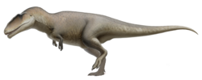

🐊 Resum Ràpid
🌍 El "Riu dels Gegants"
Imagina el Sàhara actual, però cobert de manglars, deltes i rius de quilòmetres d'amplada. Aquest era el domini de l'Spinosaurus, un entorn tan perillós que els científics l'anomenen el lloc més terrorífic de la història de la Terra.
Competència Monstruosa: No estava sol. Als mateixos rius hi vivia el Sarcosuchus (un cocodril de la mida d'un autobús) i preses gegantines com l'Onchopristis (un peix serra de 8 metres). L'Spinosaurus era el rei indiscutible d'aquest caos aquàtic.
L'Únic en la seva Espècie: És el primer dinosaure teròpode que demostra una vida semiaquàtica. No només nedava per creuar un riu, sinó que la seva anatomia indica que vivia, dormia i caçava principalment dins l'aigua.
Cronologia i Geografia: Va regnar al nord d'Àfrica (Egipte i el Marroc) durant el període Cretaci, fa entre 112 i 93 milions d'anys.
💀 Anatomia d'un Depredador Amfibi
Cada part del cos de l'Spinosaurus estava dissenyada per ser una màquina hidrodinàmica perfecta, única entre els dinosaures teròpodes:
La Cua d'Aleta (El "Game Changer"): Fins fa molt poc, es dibuixava amb una cua típica de dinosaure terrestre. Ara sabem que era alta, plana i flexible, funcionant com un propulsor massiu que li permetia perseguir peixos veloços amb moviments ondulants sota l'aigua.
El Crani Sensorial: El seu morro allargat tenia petits orificis que allotjaven receptors de pressió. Gràcies a això, podia detectar les vibracions d'una presa movent-se a l'aigua tèrbola sense necessitat de veure-la, igual que fan els caimans actuals.
Els Ossos de "Plom": A diferència d'altres carnívors, la seva densitat òssia era excepcionalment alta. Aquests ossos densos actuaven com el cinturó de ploms d'un submarinista, permetent-li controlar la flotabilitat i submergir-se amb facilitat.
La Vela: Amb més de 1,6 metres d'alçada, aquesta estructura d'espines vertebrals podria haver servit com a reclam visual, regulador tèrmic o fins i tot com una "vela" estabilitzadora durant el nado.
🏺 El "Fènix" de la Paleontologia
L'Spinosaurus és l'únic dinosaure que ha hagut de ser descobert dues vegades. La seva història és una lliçó de resiliència científica davant la guerra i el pas del temps.
La Tragèdia de Munic (1944): Ernst Stromer, el paleontòleg que el va descriure originalment el 1912, era un opositor declarat del règim nazi. Quan els aliats van bombardejar Munic durant la II Guerra Mundial, els fòssils de l'Espinosaure que es trobaven al museu van ser reduïts a pols. Durant dècades, l'animal només va existir en els acurats dibuixos i descripcions de Stromer.
El Retorn del Gegant (Segle XXI): No va ser fins a l'any 2014 quan Nizar Ibrahim i el seu equip van localitzar noves restes al Marroc. Aquestes peces van permetre completar el trencaclosques i van revelar que el "gegant terrestre" que tothom imaginava era, en realitat, un monstre fluvial amb cames curtes i una cua de rem.
🧬 L'Enllaç Evolutiu: El Cocodril del Mesozoic
L'Spinosaurus és el millor exemple d'evolució convergent: un fenomen on dos grups d'animals diferents desenvolupen solucions similars per sobreviure en el mateix entorn.
Morro Sensorial: Igual que els caimans i cocodrils actuals, l'Espinosaure tenia un sistema de petits orificis al final del seu morro (anomenats foràmens). Aquests allotjaven receptors de pressió que li permetien notar la mínima vibració d'un peix a l'aigua tèrbola, actuant com un radar biològic.
Dents de Ganxo: Les seves dents no estaven fetes per tallar carn de grans herbívors (com les del T-Rex), sinó que eren còniques i llises. Aquesta forma és ideal per clavar-se i subjectar preses relliscoses. Un cop un peix quedava atrapat entre les seves mandíbules, era impossible que s'escapés.
🥊 Duel Paleontològic: Guerra de Dominis

El Carcharodontosaurus, el "tauró de terra" que disputava el territori a l'Spinosaurus.
A diferència del T-Rex, que era el rei absolut del seu territori, l'Spinosaurus compartia el nord d'Àfrica amb un altre "pes pesant": el Carcharodontosaurus.
Especialització de Nínxols: La natura és sàvia. Per evitar el conflicte directe, es van especialitzar: l'Espinosaure era el senyor dels rius, mentre que el Carcharodontosaurus era el terror de les planes terrestres.
El Drama de la Sequera: Durant l'estació seca, els rius es convertien en basses aïllades i és aquí on els dos titans es trobaven. Les proves fòssils, com vèrtebres d'Espinosaure amb marques de dents de Carcharodontosaurus, suggereixen que aquests enfrontaments eren reals quan el menjar escassejava i la set obligava al "tauró de terra" a acostar-se als dominis aquàtics.
🎬 Cultura Popular i Mites
L'evolució visual de l'Spinosaurus al cinema i documentals.
El mite de JP3: Tot i que a la pel·lícula mata un T-Rex, la realitat és que el T-Rex tenia una mossegada trituradora d'ossos, mentre l'Espinosaure la tenia especialitzada en peixos. Fora de l'aigua, seria un bípede maldestre similar a un pelicà gegant.
💡 Anècdotes i Dades Curioses
Peus d'ànec (Membranes interdigitals): Donat el seu estil de vida aquàtic i la morfologia dels seus peus —amb dits més plans i amples que altres carnívors—, molts paleontòlegs suggereixen que podria haver tingut membranes entre els dits. Això l'hauria ajudat a propulsar-se a l'aigua i a caminar sobre el fang tou dels deltes sense enfonsar-se.
Un crani amb "sisè sentit": Els forats (foràmens) que s'observen a la punta del seu morro no eren per a les dents, sinó per allotjar una xarxa complexa de nervis. Aquest sistema li permetia detectar canvis de pressió i vibracions.
Fins i tot amb els ulls tancats o en aigües molt tèrboles, l'Espinosaure "sentia" on era el peix abans de llançar el seu atac fulminant, actuant com un autèntic radar viu.
Mida rècord: Amb unes estimacions que arriben fins als 15-18 metres de llargada, l'Spinosaurus ostenta el títol del dinosaurio carnívor més gran que ha caminat (i nedat) mai sobre la Terra, superant en longitud tant al Giganotosaurus com al famós Tyrannosaurus rex.
📚 REFERÈNCIES BIBLIOGRÀFIQUES
- Stromer, E. (1915). Das Original des Theropoden Spinosaurus aegyptiacus. Abhandlungen der Königlich Bayerischen Akademie der Wissenschaften.
- Ibrahim, N. et al. (2020). A tail-propelled aquatic dinosaur from the Cretaceous of North Africa. Nature.
- Sereno, P. C. et al. (1998). A long-snouted predatory dinosaur from Africa and the evolution of spinosaurids. Science.
- Dal Sasso, C. et al. (2005). New information on the skull of the enigmatic theropod Spinosaurus, with remarks on its size and affinities. Journal of Vertebrate Paleontology.